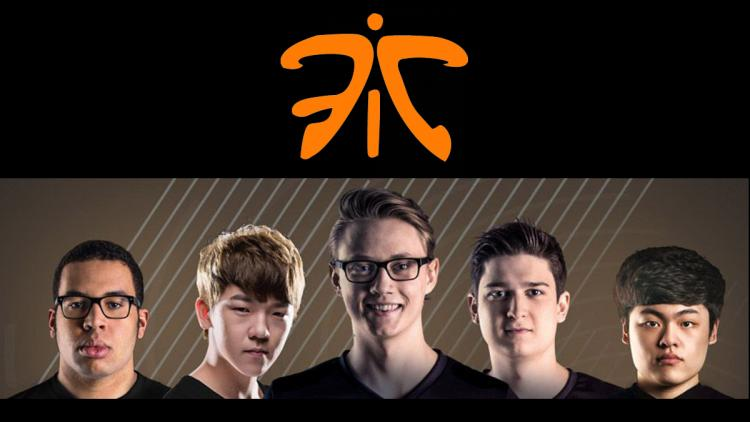

Fnatic, la grande équipe d'Europe
Parmi nos dix équipes composant les LCS EU de cette saison, celle sur qui planait le plus de doutes était certainement Fnatic.
Depuis le départ de Rekkles dans le courant du mois de novembre, cette équipe doyenne des LCS n'a cessé de s'amenuiser jusqu'au point ou il ne resta qu’un joueur, Bora "YellOwStaR" Kim, présent depuis les débuts de l'équipe. Le compte à rebours des LCS étant lancé, l'inquiétude des fans et de la communauté s’est fait ressentir à travers de nombreux posts : qu'adviendrait-t-il de cette équipe phare de la compétition et quelles étaient ses chances de rebondir ?
À l'annonce du nouveau roster début janvier, la communauté fut, pour la majorité, heureuse d'accueillir de nouveaux talents dans cette prestigieuse structure. Malgré le fait que la plupart d'entre eux n'avaient pas de réelles expériences sur la scène compétitive de haut niveau, leurs compétences ainsi que leur motivation avaient été suffisantes pour conquérir le cœur de l'organisation ainsi que celui des spectateurs.